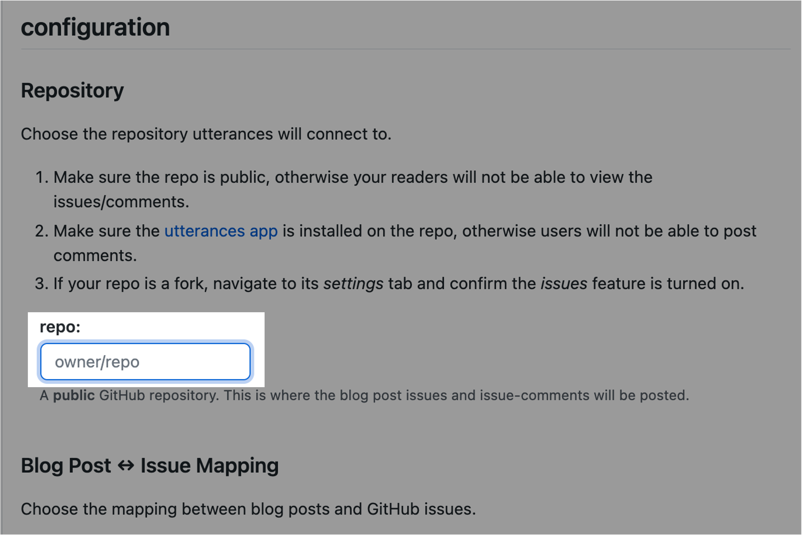
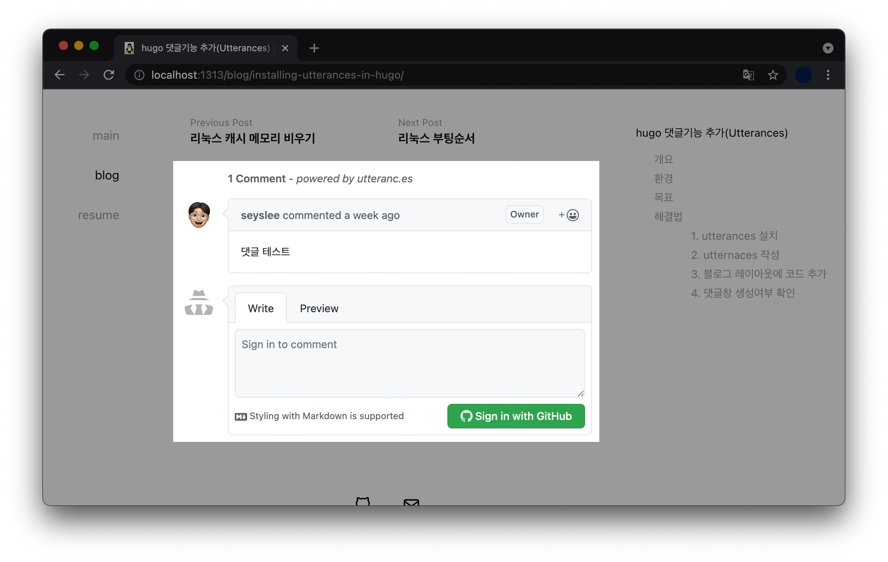

hugo 댓글기능 추가(Utterances)
개요
Hugo-theme-codex 테마를 사용하는 블로그에서 댓글 플러그인인 utterances 기능 추가하는 방법을 설명한다.
사실 언젠간 해야지 하면서 계속 미루고 있던 블로그 유지보수를 할로윈 기념으로 실시하게 되었다.
TIL(Today I Learned) 포스트는 꾸준히 작성하고 있는데, 정작 블로그 유지보수는 미루고 있었다.
환경
- 하드웨어 : Apple / MacBook Pro (13", M1, 2020)
- 사이트 정적 생성기 : hugo v0.88.1
$ hugo version
hugo v0.88.1+extended darwin/arm64 BuildDate=unknown
- 테마 : hugo-theme-codex v1.6.0
$ git submodule
-f568a96d9b35bfa63c5e5f7feb7e799f7c995cb4 public
9e911e331c90fcd56ae5d01ae5ecb2fa06ba55da themes/hugo-theme-codex (v1.6.0)
- 댓글 플러그인 : Utterances
목표
블로그 레이아웃에 Utterances 플러그인을 추가해 댓글(Comment) 기능을 구현한다.
해결법
1. utterances 설치
블로그 레포지터리(repo)에 Utterances 앱을 설치한다.
Utterances를 사용하면 댓글 기능을 구현하는 데 드는 시간은 10분이면 충분하다. 그만큼 간단하기 때문이다.
블로그 레포지터리의 공개 상태는 Public으로 설정되어 있어야만 Utterances 플러그인을 사용 가능하다.
-
utterances 설치 홈페이지에 접속한 후 본인의 깃허브 계정으로 로그인한다.
-
이후 우측에 초록색 Install 버튼 클릭
-
Only select repositories → 블로그 repo 선택 (내 경우는 seyslee/blog)
2. utternaces 작성
A) repo
utterances 공식 홈페이지에 접속한다. 중간에 configuration 이후 ‘repo:’ 값이 있다.

이 값에 소유자와 레포지터리 이름을 입력한다. 예를 들어 나같은 경우는 다음과 같이 작성했다.
repo:
seyslee/blog
B) Blog Post ↔️ Issue Mapping
블로그 글과 Issue를 어떻게 Mapping 할 것인지 정하는 설정이다.
기본값인 Issue title contains page pathname로 선택한다.
C) Issue Label
blog-comment 로 입력. 아무 입력 없으면 기본값인 Comment로 설정된다.
Issue Label은 옵션값(Optional)이기 때문에 Default 값인 Comment를 사용해도 블로그 서비스에는 전혀 지장없다.
D) Theme
댓글창 테마는 각자 원하는 걸로 선택하면 된다.
내 블로그 테마인 hugo-theme-codex는 흰색 계열이기 때문에 같은 색상에 맞춰 기본값인 GitHub Light로 선택했다.
E) Enable Utterances
repo 정보, 블로그 포스트와 이슈간 맵핑 방식, 이슈 라벨, 테마를 선정했다면 최종적으로 Utterances 플러그인의 코드가 자동 완성된다.
<script src="https://utteranc.es/client.js"
repo="seyslee/blog"
issue-term="pathname"
label="blog-comment"
theme="github-light"
crossorigin="anonymous"
async>
</script>
Utterances 생성시 입력한 값이 사용자마다 각각 다르기 때문에, 위 코드는 내 경우에만 해당되니 참고만 하자.
이제 블로그 포스트 레이아웃 파일(.html)의 적절한 위치에 Utterances 코드를 붙여넣는 작업만 하면 끝난다.
3. 블로그 레이아웃에 코드 추가
블로그 테마마다 레이아웃 파일의 경로나 구조가 다르다. 해당 글은 현재 저자가 사용중인 테마인 hugo-theme-codex 기준으로 설명하고 있기 때문에 만약 다른 블로그 테마를 사용중이라면 도움이 안될 수도 있다.
작업경로
blog (/) # seyslee/blog
└─ themes
└─ hugo-theme-codex
└─ layouts
└─ _default
└─ single.html # 작업대상! 개별 포스트에 대한 레이아웃 파일.
hugo-theme-codex 테마의 경우 개별 포스트에 대한 레이아웃은 single.html 파일에 선언되어 있다.
모든 포스트에 댓글 기능을 일괄 적용하려면 single.html 파일을 열어서 Utterances 코드를 붙여넣으면 된다.
변경전 single.html
{{ define "styles" }}
{{ $.Scratch.Set "style_opts" (dict "src" "scss/pages/post.scss" "dest" "css/post.css") }}
{{ end }}
{{ define "main" }}
{{ $dateFormat := .Site.Params.dateFormat | default "Jan 2 2006" }}
<div class="flex-wrapper">
<div class="post__container">
<div class="post">
<header class="post__header">
<h1 id="post__title">{{.Title}}</h1>
{{ if .Date }}<time datetime="{{ .Date }}" class="post__date">{{ .Date.Format $dateFormat }}</time> {{ end }}
</header>
<article class="post__content">
{{ partial "anchored-headings.html" .Content }}
{{ if or .Params.math .Site.Params.math }}
{{ partial "math.html" . }}
{{ end }}
</article>
{{ partial "tags.html" .}} {{ partial "post-pagination.html" .}}
{{ template "_internal/disqus.html" . }}
<footer class="post__footer">
{{ partial "social-icons.html" .}}
<p>{{ replace .Site.Copyright "{year}" now.Year }}</p>
</footer>
</div>
</div>
{{ if .Params.toc }}
<div class="toc-container">
{{ if .Site.Params.showPageTitleInTOC }} <div class="toc-post-title">{{ .Title }}</div> {{ end }}
{{ .TableOfContents }}
</div>
{{ end }}
</div>
{{ end }}
{{ define "scripts" }}
{{/* Hardcode a specific prismjs version to avoid a redirect on every page load. */}}
<script src="https://unpkg.com/prismjs@1.20.0/components/prism-core.min.js"></script>
{{/* Automatically loads the needed languages to highlight the code blocks. */}}
<script src="https://unpkg.com/prismjs@1.20.0/plugins/autoloader/prism-autoloader.min.js"
data-autoloader-path="https://unpkg.com/prismjs@1.20.0/components/"></script>
{{ if .Params.toc }}
<script src="/js/table-of-contents.js"></script>
{{ end }}
{{ end }}
중간에 <footer> ... </footer> 부분이 있다. 이 부분 바로 윗줄에 복사한 utterances 스크립트를 복붙한다.
<script src="https://utteranc.es/client.js"
repo="seyslee/blog"
issue-term="pathname"
label="blog-comment"
theme="github-light"
crossorigin="anonymous"
async>
</script>
위 utterances 스크립트는 내 환경에 작성된 코드이기 때문에, 이걸 그대로 본인 블로그에 복붙하면 안된다.
각자 Utterances 사이트에서 입력한 값을 토대로 자동 생성된 스크립트를 복사해서 붙여넣어야 한다.
변경후 single.html
{{ define "styles" }}
{{ $.Scratch.Set "style_opts" (dict "src" "scss/pages/post.scss" "dest" "css/post.css") }}
{{ end }}
{{ define "main" }}
{{ $dateFormat := .Site.Params.dateFormat | default "Jan 2 2006" }}
<div class="flex-wrapper">
<div class="post__container">
<div class="post">
<header class="post__header">
<h1 id="post__title">{{.Title}}</h1>
{{ if .Date }}<time datetime="{{ .Date }}" class="post__date">{{ .Date.Format $dateFormat }}</time> {{ end }}
</header>
<article class="post__content">
{{ partial "anchored-headings.html" .Content }}
{{ if or .Params.math .Site.Params.math }}
{{ partial "math.html" . }}
{{ end }}
</article>
{{ partial "tags.html" .}} {{ partial "post-pagination.html" .}}
{{ template "_internal/disqus.html" . }}
<script src="https://utteranc.es/client.js"
repo="seyslee/blog"
issue-term="pathname"
label="blog-comment"
theme="github-dark"
crossorigin="anonymous"
async>
</script>
<footer class="post__footer">
{{ partial "social-icons.html" .}}
<p>{{ replace .Site.Copyright "{year}" now.Year }}</p>
</footer>
</div>
</div>
{{ if .Params.toc }}
<div class="toc-container">
{{ if .Site.Params.showPageTitleInTOC }} <div class="toc-post-title">{{ .Title }}</div> {{ end }}
{{ .TableOfContents }}
</div>
{{ end }}
</div>
{{ end }}
{{ define "scripts" }}
{{/* Hardcode a specific prismjs version to avoid a redirect on every page load. */}}
<script src="https://unpkg.com/prismjs@1.20.0/components/prism-core.min.js"></script>
{{/* Automatically loads the needed languages to highlight the code blocks. */}}
<script src="https://unpkg.com/prismjs@1.20.0/plugins/autoloader/prism-autoloader.min.js"
data-autoloader-path="https://unpkg.com/prismjs@1.20.0/components/"></script>
{{ if .Params.toc }}
<script src="/js/table-of-contents.js"></script>
{{ end }}
{{ end }}
<script> ... </script> 부분이 추가됐다.
4. 댓글창 생성여부 확인
git commit 해서 실제 블로그 환경에 적용하기 전에 먼저 localhost에서 잘 적용되었는지 확인해보자.
$ hugo server -D
Start building sites …
hugo v0.88.1+extended darwin/arm64 BuildDate=unknown
| EN
-------------------+-----
Pages | 65
Paginator pages | 0
Non-page files | 0
Static files | 12
Processed images | 0
Aliases | 0
Sitemaps | 1
Cleaned | 0
Built in 37 ms
Watching for changes in /Users/ive/githubrepos/blog/{archetypes,content,data,layouts,static,themes}
Watching for config changes in /Users/ive/githubrepos/blog/config.toml
Environment: "development"
Serving pages from memory
Running in Fast Render Mode. For full rebuilds on change: hugo server --disableFastRender
Web Server is available at http://localhost:1313/ (bind address 127.0.0.1)
Press Ctrl+C to stop
이후 블로그 홈페이지( http://localhost:1313/)에 접속해서 확인해본 결과, 포스트 하단에 Utterances 댓글창이 잘 적용된 걸 확인할 수 있다.

그럼 다들 Hugo 블로그 잘 쓰시길 바란다. Happy Halloween!